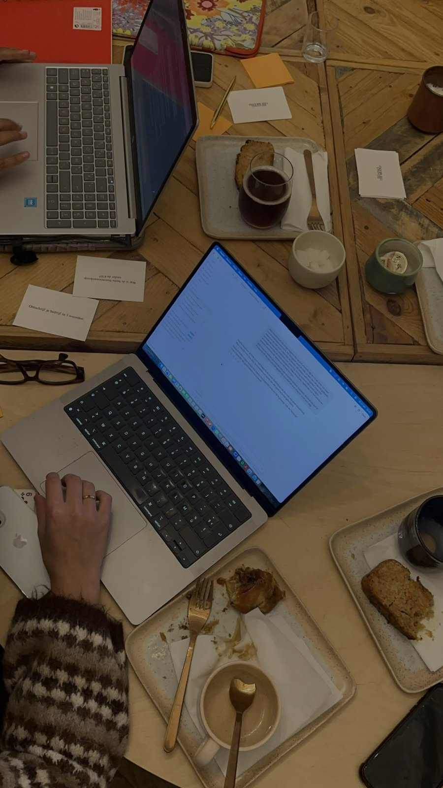
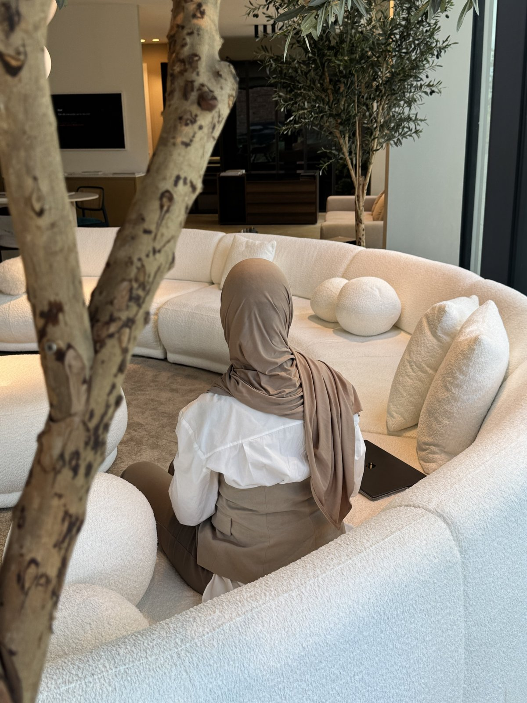

Een gratis workshop voor ondernemers die AI al eens geprobeerd hebben. Maar wat als AI echt meewerkt in je business? Ik laat je zien hoe ik dat elke week doe en hoe jij zelf begint.
Je liet er een caption mee schrijven. Het klonk niet als jij, dus je herschreef alles zelf. En de volgende week begon je weer van nul, met je planning, je ideeën en je mails.
Ik had dat ook. Tot ik AI ben gaan zien als een collega in plaats van een tekstmachine. Nu draait er elke week een heel systeem mee in mijn business en dat wil ik je laten zien.

Je kijkt mee achter de schermen, zonder hype en zonder ingewikkelde termen. Je hoeft niets te installeren: je gaat naar huis met alles wat je nodig hebt om de dag erna zelf te starten.
Ik toon je hoe ik mijn ideeën, posts en planning op één plek heb en wat AI daar elke week voor mij in doet.
Van mijn weekplanning tot mijn mails: ik toon je welke taken AI elke week voor mij oppakt. Zo zie je waar jij de meeste tijd kan winnen.
Je krijgt mijn gratis AI-setup mee naar huis, zodat je de dag erna zelf kan starten. Zo klinkt AI voortaan als jij en niet als een robot.
Gratis, wel inschrijven want de plaatsen zijn beperkt.

Met Impressed help ik ondernemers om minder tijd te verliezen aan content en marketing, door slim gebruik te maken van AI.
Ik werk alleen, dus ik moest wel slimmer werken in plaats van harder. Op deze avond toon ik je hoe ik dat doe.
Een heel aangename avond, omdat er op één duidelijk onderwerp gefocust werd. Ik voelde mij totaal niet overweldigd. Het was eerder een tof netwerkmoment waarbij jij jouw geheimen in Claude met ons deelde en we vragen konden stellen.
Donderdag 14 januari 2027, 18u tot 19u30 in het START.huis, Vilvoorde. Gratis, beperkte plaatsen.